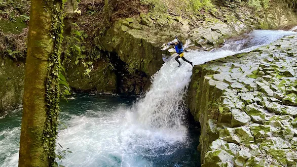
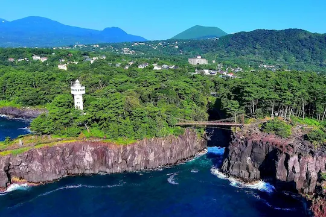
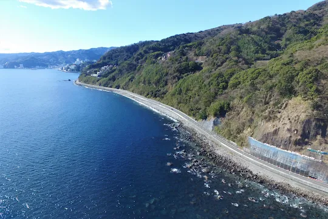
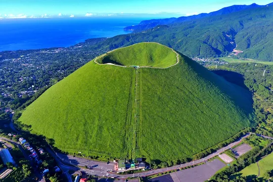
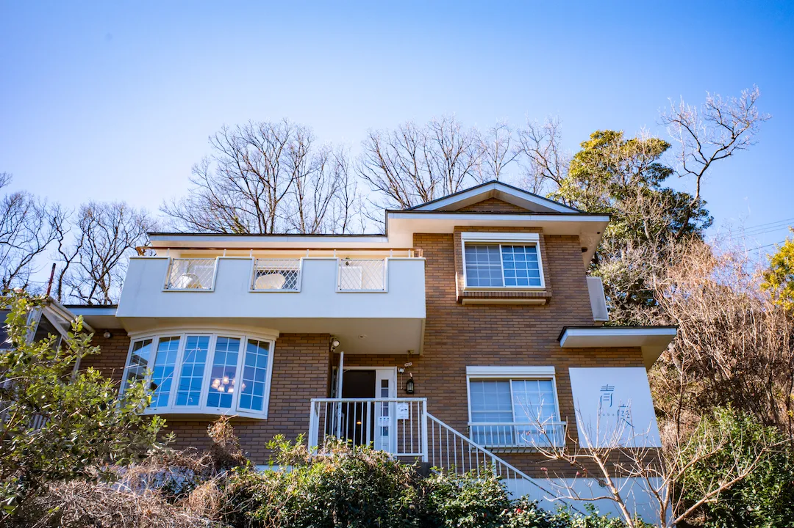
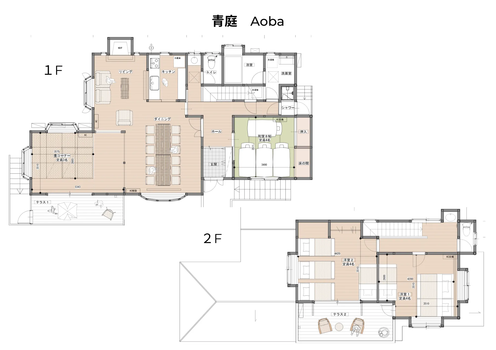

1日目
2日目
宿でまったりしつつ、各自エネルギーチャージ。
※混雑が予想されるため、移動時間は約1時間想定。

キャニオニング
体力勝負のメインイベント！濡れた服を入れるビニール袋などがあると便利です。
ヘトヘトになった体を休めつつ、2日目の夜の宴へ。
周辺情報

城ケ崎海岸
自然の神秘が創り出した壮大な景色に感動！季節の花々にも癒される
3日目
忘れ物（特に持ち込んだ遊び道具）がないか徹底チェック！
行きたい場所があれば道中で要相談！

伊豆～熱海ドライブ
道中は多分海沿いを走るルート。
気になるお店があれば道中で寄り道
無事故で帰り着くまでが合宿です。
夕飯
スペシャルゲストと合流して最高の締めくくり
周辺情報

大室山
お椀をふせたようなシルエットが特徴。山頂へはリフトで。お鉢めぐりでは富士山や伊豆七島の素晴らしい眺望が楽しめます！
伊豆シャボテン動物公園
元祖カピバラの露天風呂で見られる、お湯に浸かって気持ちよさそうなカピバラたちの姿は全国的に有名！
インフォメーション
当日徴収予定予算
25,115円
+ ガソリン、高速、食費など
予算内訳
- 宿代（2泊3日）：12,430円 / 1人 （総額111,867円）
- レンタカー代（2日間）：3,685円 / 1人 （総額29,480円）
- キャニオニング：9,000円 / 1人
- 車関連（ガソリン代, 高速道路代）：3500円 / 1人
（総額ガソリン：14000円、高速道路代：14000円） - その他雑費（食費やお土産など）
特殊持ち物リスト
交通費の詳細
ガソリン代算定： 計 約14,000円
往路（恋ヶ窪→熱海→八幡野）：約150km
現地（宿⇔河津キャニオニング往復＋買い出し等）：約100km
復路（八幡野→恋ヶ窪）：約150km
[条件] 定員4〜5名＋荷物満載。伊豆特有のアップダウンによる燃費悪化を考慮。
400km ÷ 実燃費 8.5km/L ＝ 消費 47.05L
47.05L × レギュラー 170円/L ＝ 7,998.5円
[条件] 定員4名フル乗車＋荷物。山道での高回転域多用による燃費低下を考慮。
400km ÷ 実燃費 11.3km/L ＝ 消費 35.39L
35.39L × レギュラー 170円/L ＝ 6,016.3円
高速・有料道路代算定： 計 約14,000円
| 区間（国立府中出発想定） | 片道料金 |
|---|---|
| 国立府中IC〜厚木IC（中央/圏央道） | 1,680円 |
| 厚木IC〜小田原西IC（小田原厚木道路） | 740円 |
| 早川IC〜石橋IC（西湘バイパス） | 210円 |
| 真鶴道路 ＋ 熱海ビーチライン | 700円 |
| 片道合計 | 3,330円 |
※往復 6,660円 ＋ 渋滞回避時の迂回ルート予備費 340円 ＝ 1台あたり 計 7,000円
7,000円 × 2台 ＝ 計 14,000円
※軽自動車は普通車より少し高速代が安くなりますが、予算不足を防ぐために安全をとって「普通車料金 × 2台」で計算しています。
宿舎情報
注意事項
- タバコは駐車場のみ可能（レンタカー、ひろさわ宅の車共に喫煙厳禁です。）
- 指定の場所以外の場所での喫煙は厳禁です（電子タバコも含む）。発覚した場合違約金￥20,000（税抜）が発生します。
- チェックアウト時間を30分過ぎるたびに遅延料が発生します。￥3,000円（税抜）/30分
- 手持ち・打ち上げ問わず安全のため花火等の使用は禁止です。
- 夜間（20:00～）の騒音に関するクレームは5万円、警察沙汰に発展した場合は10万円の罰金が発生します。
- その他詳細はこちら
施設画像

